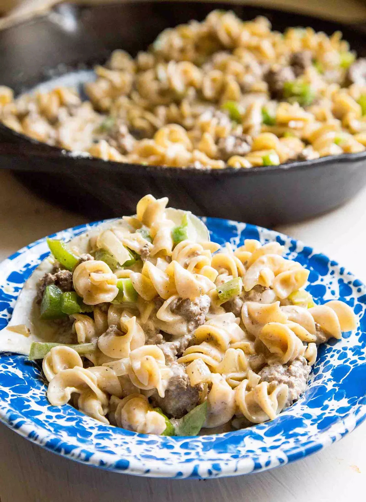

William Salas
William Salas
Spaghetting with Tomato Sauce

Other Information
- Servings: 21 Persons
- Time of Preparation: 30 Minutes
Ingredients
- 1 medium onion, cut into large pieces
- 2 garlic cloves
- ½ cup coarsely chopped roasted red peppers from a jar
- 3 Tbsp. extra-virgin olive oil, plus more for drizzling
- 12 oz. rigatoni, mezzi rigatoni, ditali, or other short or medium-length straight tube pasta
- 2 (5–6-oz.) cans or jars oil-packed tuna
Preparation
- Whisk egg yolk, garlic, ¼ tsp. salt, and 2 tsp. water in a small bowl to combine. Place bowl on a kitchen towel so it won’t slide around as you whisk and gradually stream in oil, whisking constantly until thick and emulsified. Aioli should be thick but pourable; gradually whisk in more oil if needed. Taste and season with more salt if desired.
- Place rack in upper third of oven; preheat to 375°F. Pulse onion, garlic, and roasted red peppers in a food processor until finely chopped; set aside. Heat 3 Tbsp. olive oil in a 10” ovenproof skillet, preferably cast iron, over medium-low. Add pasta and cook, stirring often, until evenly coated in oil and lightly browned, about 5 minutes (depending on the size and shape of your pasta, you may need to work in batches). Using a slotted spoon, transfer to a large bowl. Reserve pan.
- Drain tuna, reserving 2 Tbsp. tuna oil. place oil in reserved pan and increase heat to medium. Add anchovy, ½ tsp. salt, and reserved chopped vegetable mixture and season with pepper. Cook, stirring occasionally, until vegetables soften, 5–7 minutes. Add tomato paste and cook, stirring, until slightly darkened in color, about 3 minutes. Mix in toasted pasta, tomatoes, turmeric, red pepper flakes, remaining ½ tsp. salt, and 2½ cups water and bring to a boil. Cook, stirring occasionally, until pasta is slightly softened, 8–10 minutes. Remove from heat and stir in drained tuna and ¼ cup water.
- Transfer skillet to oven and bake casserole until pasta is tender and juices at the edges are bubbling, about 15 minutes. Remove from oven.
- Heat broiler. Drizzle casserole with a little olive oil and broil until browned and crisped in spots, about 4 minutes.
- Spoon some aioli over casserole and top with parsley if desired. Serve remaining aioli alongside.